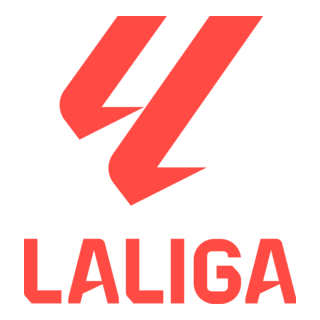

The Campeonato Nacional de Liga de Primera División,[a] commonly known as the Primera División[b] or La Liga,[c][2] and officially known as LaLiga EA Sports[d][3] for
sponsorship reasons, is a professional association football league in Spain and the highest level of the Spanish football league system. Governed by the Liga Nacional de Fútbol
Profesional, it is contested by 20 teams over 38 matchdays.
A total of 63 teams have competed in La Liga since its inception. Nine clubs have been crowned Spanish champions.
Real Madrid and Barcelona have dominated the competition, with 36 and 29 titles respectively. Other successful clubs include Valencia, Atlético Madrid, Athletic Bilbao, and Real
Sociedad, while Deportivo La Coruña have also won the title, reflecting a history of success across several Spanish clubs.
As of the 2024–25 season, La Liga was ranked third in the
UEFA coefficient rankings based on performances in European competitions over the past five seasons, behind England's Premier League and Italy's Serie A. La Liga has led the
coefficient rankings for more years than any other league and has produced the continent's top-rated club more often than any other league. Its clubs have won more UEFA Champions
League (20), UEFA Europa League (14), UEFA Super Cup (17) and FIFA Club World Cup (8) titles than those of any other league, while its players have accumulated the most Ballon
d'Or awards (24), The Best FIFA Men's Player awards (19)[e] and UEFA Men's Player of the Year awards (12).[f]
